Veri Tabanları
Veri tabanları bilgilerimizi kullanım amacına uygun şekillerde,
fiziksel olarak saklayabilen araçlardır.
Veri Tabanı Yönetim Sistemi
Veri tabanı Yönetim Sistemleri, verilerin fiziksel hafızadaki durumlarını, kullanıcıların erişimlerini düzenleyen sistemlerdir.
VTYS, yeni bir veri tabanı oluşturmak, veri tabanını düzenlemek, geliştirmek ve bakımını yapmak gibi çeşitli karmaşık işlemlerin gerçekleştirildiği birden fazla programdan oluşmuş bir yazılım sistemidir.
VTYS’ler fiziksel hafızayı ve veri tiplerini kullanıcılar adına şekillendirip denetleyerek kullanıcılarına standart bir SQL arayüzü sağlar ve onların dosya yapıları, veri yapısı, fiziksel hafıza gibi sorunlarla ilgilenmek yerine veri giriş-çıkışı için uygun arayüzler geliştirmelerine olanak sağlarlar.
İlişkisel Veri Tabanı
İlişkisel veritabanları; stokları takip etmek, e-ticaret işlemlerini işlemek, çok miktarda önemli müşteri bilgilerini yönetmek ve çok daha fazlasını yapmak için kullanılmaktadır. Bu işlerin üstesinde de gayet basit bir kullanımla gelebilmektedir.
Bu veritabanlarında mantık iki farklı veri tablosunu ilişkilendirmek için aralarına bir anahtar değer ataması yapmaktan geçer. ilk tablomuzda atadığımız anahtarı SQL'de "database diagrams" seçeneğiyle diğer tabloya bağlarız. Artık iki tablo arasındaki bilgileri güvenle kullanabilirsiniz.
Stored Procedure
Veri erişimi, birçok tekrarlı işlemi içerir. Örneğin, istenen sonucu elde etmek için bir veri tablosundan bilgi almaya yönelik basit bir sorgunun yüzlerce kez tekrarlanması gerekebilir. İşlemlerin verimliliğini düşüren bu durumlara çözüm ise Stored Prosedure diyebiliriz.
Store Procedure, programlamada kullanılan ifadelere göre kod yazmamızı sağlar. Böylece her seferinde aynı işlemleri yapma gereksinimi duymadan zamandan tasarruf etmiş oluruz.
Store Procedure, giriş parametreleri alarak, çağrıldığında çıktı değeri döndürür. Veritabanında işlemler gerçekleştirebileceğimiz BEGIN…END, IF ELSE, WHILE, BREAK, CONTINUE, CASE gibi ifadeler ile kullanılabilir.
Türkçesi Saklı Yordam'a denk gelmektedir. Bir Saklı Yordam içinde başka Saklı Yordam’lar çağırılıp çalıştırılabilir. Veritabanlarında saklandığından dolayı daha hızlı çalışırlar. Saklı Yordam’lar sadece ilk çalıştıklarında derlenirler ,tekrar çalıştıklarında derlenmezler ve bu da Saklı Yordam'ları verimli kılar.
Saklı Yordam Oluşturma (CREATE Store Procedure)
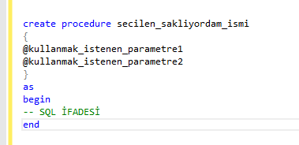
MsSQL Server ortamında en basit haliyle Saklı Yordam oluşturmak. Oluşturduğumuz saklı yordamı çalıştırmak için ise aşağıdaki ifadeyi kullanırız.
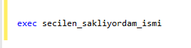
Saklı Yordam Güncelleme (ALTER Store Procedure)
Önceden oluşturmuş olduğumuz Saklı Yordam üzerinde değişiklik yapmak istediğimizde ALTER ifadesini kullanırız. Oluştururken uyulan adımların benzerleri geçerlidir. Değiştirmek istediğimiz parametreyi belirttikten sonra temel fark ise Create Procedure yerine Alter Procedure yazılmasıdır.
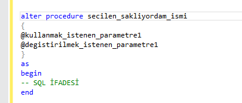
Saklı Yordam Silme (DROP Store Procedure)
Saklı Yordamın silinmesi işlemi Drop Procedure ifadesinden sonra silinmek istenen Saklı Yordamın isminin yazılmasıyla olur. Daha sonra sorgu execute edilir ve işlem gerçekleşir.
Triggers
Türkçesi Tetikleyiciye denk gelen Triggerlar Saklı Yordamların özel bir türüdür. Tetikleyiciler genellikle veri bütünlüğünü ve güvenliğini sağlamak için kullanılır.
Tetikleyicileri Saklı Yordam'lardan ayıran en önemli özellik Saklı Yordam'ları elle çalıştırmamızın gerekmesidir.
Tetikleyiciler ise bir tablo üzerinde bir işlem gerçekleştiği zaman (insert, update, delete) başka bir işlem daha buna bağlı olarak kendiliğinden gerçekleşsin istendiğinde bunu realiteye çeviren kodlar bütünüdür.
Bir trigger oluşturmak için aşağıdaki resimde gösterildiği gibi genel yapı kullanılır.
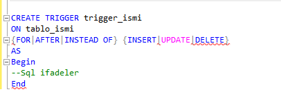Triggerları bir örnekle açıklayalım. Bunun için önce ürün, sepet ve satış tabloları içeren küçük bir veri tabanı yapalım.

Daha sonra ise üç tabloyu birbirleriyle ilişkilendirmek için iki tane foreign key ekleriz.
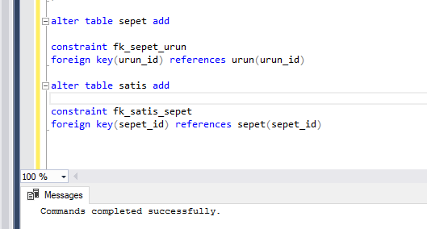
Yaptığımız işlemleri net olarak görebilmek içinse ürün tablosuna veri girişi yapmamız gerek.
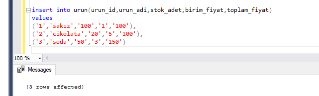
Veri tabanına trigger eklemek için eklemek istenilen tablonun altındaki trigger klasörüne gelip farede sağa tıklayınca açılan penceredeki "add trigger" seçeneğine basılır. Bu bize trigger için tasarımı hazır bir query sayfası verir.
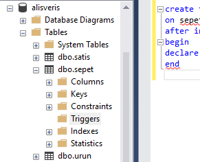
İlk triggerla sepete eklediğimiz ürünlerin ürün tablosundan eksilmesini sağlayalım. Bunun için önce bize kodlarda yardımcı olması için @urun_id ve @miktar isimli iki değişken tanımlarız.
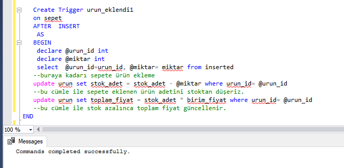
"after insert as" ve " from inserted" arasındaki kodlarla sepet tablosuna sütun adları belirtilen değişkenleri ekleriz. "update set" ile de ikinci bir tabloya ikinci işlemi tanımlarız.
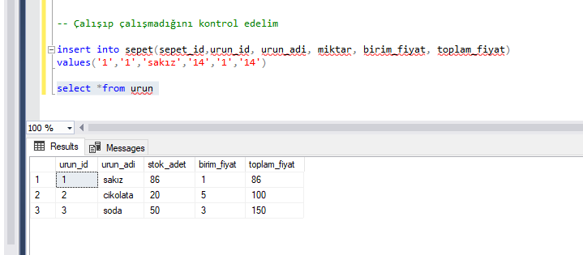
Yukarıda sepete eklenen ürünlerin ürün tablosundan eksildiğini görebiliriz. Yani işlemler buraya kadar doğru. Peki o zaman ikinci bir trigger daha yapalım. Bu da sepetle iş bittikten sonra o sepeti silip verileri satışa aktaran bir trigger olsun.
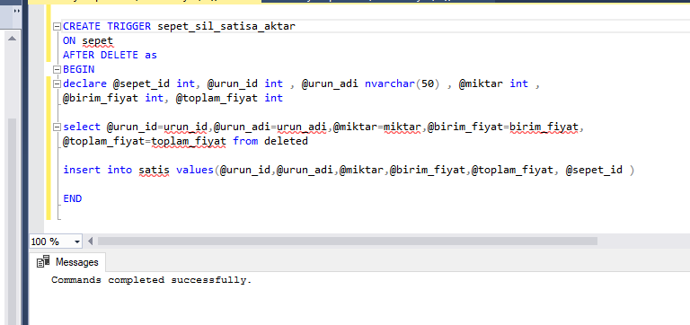
Bu triggerda sepet tablosundaki bütün sütunlar değişkenlere aktarılır. "after delete as" ve "from deleted" arasındaki kodlarla
değişkenleri sütun adlarına eşitleriz ve silindikten sonrası için hafızaya alırız. "insert into" ile de hafızadaki veriler
satış tablosuna aktarılır.
Triggerı kontrol edelim.
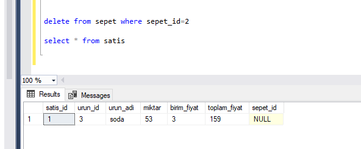
Eklediğimiz üç satırdan idsi 2 olan ürün önce sepete eklenmiş daha sonra da silinmiştir. En temel sql kodu olan select*from ile satış tablosundaki verileri görmüş oluyoruz. İkinci trigger da doğru çalışıyor.
İlişkisel Olmayan Veri Tabanı
İlişkisel olmayan veri tabanları namıdiğer "NoSQL".
Bu tür veritabanları, özellikle büyük veri hacmi, düşük gecikme süresi ve esnek veri modelleri gerektiren uygulamalar için optimize edilmiştir. Bu gereksinimler, diğer veritabanlarının veri tutarlılığı kısıtlamalarının bir kısmı esnetilerek karşılanır.
Bir NoSQL veritabanında, her tablo genellikle bir JSON belgesi olarak saklanır.
İlişkisel veritabanlarında tasarımdaki bir değişiklik,
herşeyi yeniden tasarlamaya neden olmakta. NoSQL veri tabanlarının yapısı çok daha basit ve esnek.
Dolayısıyla yapılacak değişiklikler herşeyi ya etkilemiyor ya az etkiliyor.
SQL ve NoSQL Terminolojisinin Karşılaştırması
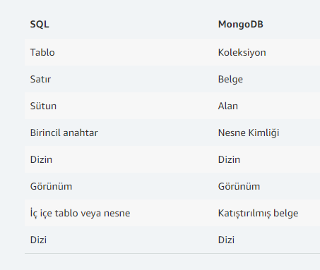